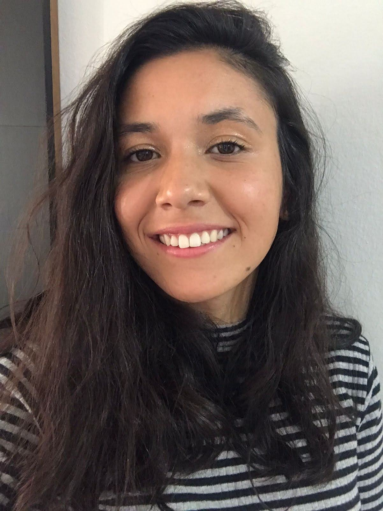

Por um mundo mais saudável através da bioinformática
Tenho uma grande paixão por tecnologia e ciência, acreditando que a inovação pode transformar a saúde e torná-la mais acessível a todos. A bioinformática surgiu como a oportunidade perfeita para aplicar meus conhecimentos e contribuir com soluções que podem fazer a diferença. Estou determinada a usar a tecnologia para resolver desafios no campo da saúde e promover avanços significativos.
Além da minha dedicação à ciência, sou uma grande amante da música. Nos meus momentos de lazer, gosto de tocar violão e piano, pois acredito que a música também tem o poder de conectar e inspirar.
